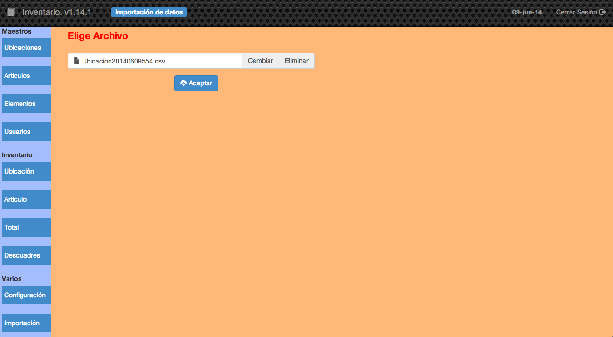
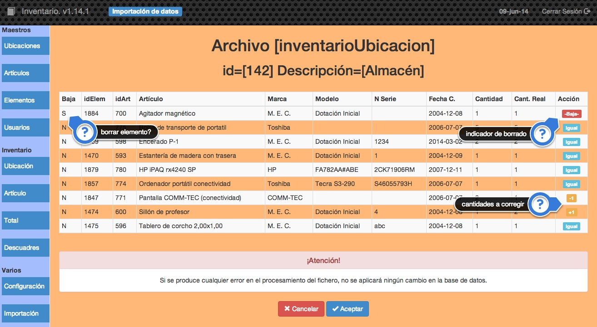
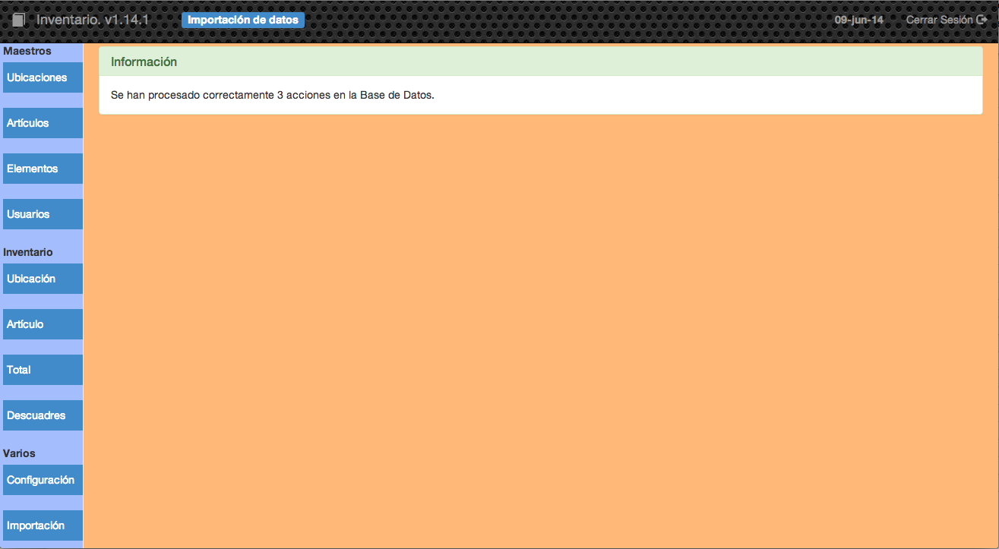

2.3.2 Importación
Esta opción puede ser interesante si queremos actualizar el inventario mediante la utilización de una hoja de cálculo.
En primer lugar habrá que generar un archivo csv mediante cualquiera de las dos opciones de Inventario que son capaces de hacerlo, es decir, las opciones de Ubicación y Artículo.
Una vez generado tendremos que utilizar cualquiera de los programas de hoja de cálculo para actualizar este archivo, podremos por tanto utilizar: Libreoffice, Microsoft Excel, Google Drive, etc.
Una vez que tengamos el archivo csv con la información actualizada (es importante no cambiar el formato al archivo cuando se guarde) tendremos que utilizar esta opción para subirlo a la aplicación.

Cuando pulsamos Aceptar el archivo se comprueba para ver si tiene la estructura adecuada y en caso de que así sea nos mostrará la siguiente pantalla:

En la primera columna indicaremos si queremos eliminar ese elemento. En caso afirmativo en la última columna aparecerá el mensaje de -Baja-
Si no se hace ningún cambio, en la última columna aparecerá el mensaje Igual.
En el caso de que se haya cambiado el dato de Cantidad real nos aparecerá en la última columna la modificación que se realizará en el elemento. En el ejemplo anterior se restará uno al número de Pantallas COMM-TEC en el Almacén y se sumará 1 a la cantidad de sillones de profesor que hay en esa ubicación.
Si pulsamos Aceptar el programa realizará las acciones que haya pendientes en el archivo csv en el ejemplo son 3 acciones. Si ocurre algún error al procesar el fichero no se hará ningún cambio en la base de datos.
Al finalizar el proceso el programa nos mostrará el número de acciones realizadas en la base de datos.
